Flattening sheet metal parts
After constructing a sheet metal part, you can use the Flat Pattern and Save As Flat commands to create a flat pattern of a sheet metal part.
Using the Flat Pattern command
Use the Tools tab →Flat group→Flat Pattern command in the Sheet Metal environment to create a flat pattern in the same file as the formed sheet metal part.
When you flatten a sheet metal part with the Flat Pattern command, a Flat Pattern feature is added to the PathFinder tab.
If the sheet metal model changes, the flat pattern becomes outdated, as is indicated by the
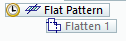
symbol next to the Flat Pattern feature in PathFinder. To update the flat pattern, right-click the Flat Pattern feature in PathFinder, then on the shortcut menu click Update.Using the Save As Flat command
The Save As Flat command flattens a sheet metal part and saves the part as one of the following document types:
-
Part document (.par)
-
Sheet Metal document (.psm)
-
AutoCAD document (.dxf)
When you use the Save As Flat command, the flattened document is not associative to the folded document.
You can create the flat pattern definition based on:
-
An existing flat pattern
Select the Use Existing Flat Pattern (Use Folded Model if Not Defined) option on the Flat Pattern Treatments page of the Solid Edge Options dialog box to create the flat pattern based on an existing flat pattern. Any material you add or remove in the flat pattern environment is included when the flat is saved. If no flat pattern exists, the folded model is used to define the pattern.
-
The folded model state
Select the Use Folded Model option on the Flat Pattern Treatments page of the SSolid Edge Options dialog box to create the flat pattern definition based on the folded model state, even if a flat pattern already exists. Any material you add or remove in the flat pattern environment is excluded when the flat is saved.
Minimum bend radius
To facilitate creation of flat patterns, Solid Edge always creates a minimum bend radius for flanges, contour flanges, and lofted flanges, even if you specify a bend radius value of zero (0.00). For metric documents, a zero bend radius is set to a value of approximately 0.002 millimeters. For English documents, a zero bend radius is set to a value of approximately 0.0000788 inches. If you need the bend radius to be exactly zero, you have to create the features in the Part environment.
Cleaning up flat patterns
When flattening sheet metal parts, the system adds bend relief to the flat pattern. This system-generated bend relief can cause problems to downstream manufacturing processes such as punching and nesting. While working in the Sheet Metal environment, you can set options on the Flat Pattern Treatments page of the Options dialog box to automatically clean up the flat pattern.
The options on the Flat Pattern Treatments tab control corner treatments, simplify B-splines in the model to arcs and lines, and remove the system-generated bend relief.
If you change the options on this tab after a flat pattern is generated the system recomputes the flat pattern or updates the flat pattern.
Managing flat pattern size
Use the Flat Pattern Options dialog box to set the maximum flat pattern size and issue a warning if that size is violated. This is useful if a part cannot be manufactured because of sheet size limitations.
The Current Size section of the dialog box displays the length and width of the current flat pattern. These values are read-only and cannot be changed manually. They are updated when the values change in the flat model and the model is updated. The Alarm section allows you to specify the maximum length and width values for the flat pattern. You can specify a maximum length, maximum width, or both. You can either enter these values or use default values that are specified on the Flat Pattern Treatments page on the Options dialog box. If the flat pattern violates these size limitations, the
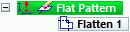
symbol is displayed next to the flat pattern entry in PathFinder. If you hover over the flat pattern entry, a tool tip displays the current flat pattern size along with the maximum size limitations.You can use the Show Cut Size Range and Dimensions option to display a range box for the flat pattern along with the dimensions for the current length and width of the flat pattern. The size of the pattern is determined when the flat pattern is created and is recalculated when the flat model is updated.
Changing flat pattern position and orientation
Use the Rotate Face and Move Face commands on the Modify tab in the Flatten environment to change the position or orientation of a flat pattern.
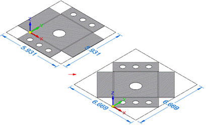
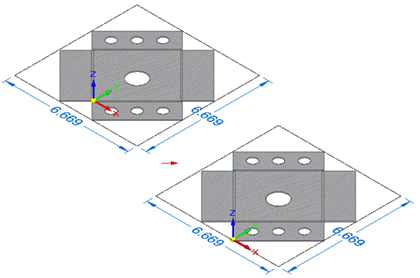
The commands only support the Body selection type.
Flattening deformation features
To remove a deformation feature after you flatten a part using the Flat Pattern and Part Copy commands, you can construct a cutout feature that is sized according to the area the deformation feature occupied. In many cases, you can use the Include command to create a cutout profile that is associatively linked to the edges of the deformation feature. Later, if the deformation feature changes, the cutouts also update. This approach maintains the true position for the deformation feature, which can be useful for creating downstream manufacturing documentation.
Alternatively, you can use the commands on the command bar to remove the deformation features before to or after you flatten the part. For example, you can use the Delete Faces command to delete a deformation feature. The deformation feature is not physically deleted from the part, it is still available when working in the Sheet Metal environment. With this approach, the location of the deformation feature is lost in the flattened version of the part.
Displaying deformation features in the flat pattern
You can use the options in the Formed Feature Display section of the Flat Pattern Treatments page to specify how deformation features are displayed in the flat pattern.
You can display the deformation features as a:
|
Formed feature |
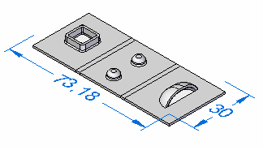 |
|
Feature loop |
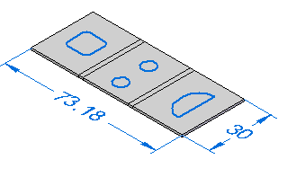 |
|
Feature origin |
|
|
Feature loop and feature origin |
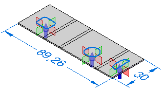 |

Saving deformation features to other files
The Formed Feature Display section of the Flat Pattern Treatments page specifies how deformation features are exported when you use the Save as Flat to flatten the sheet metal model and save it to another document.
When saving the document to .prn or .psm format:
-
As Formed Feature—Replaces the deformed feature with a cutout the size of the area consumed by the feature.
-
As Feature Loops—Replaces the loops representing the deformation feature with a curve.
-
As Feature Origin—Does not export the deformation feature or the feature origin.
-
As Feature Loops and Feature Origin—Replaces the loops representing the deformation feature with a curve and feature origins are not exported.
When saving the document to .dxf format:
-
As Formed Feature—Replaces the deformed feature with a 2D wireframe representation as they would appear in the formed condition.
-
As Feature Loops—Replaces the loops representing the deformation feature with a curve and are specified as either an up or down feature.
-
As Feature Origin—Does not export the deformation feature or the feature origin.
-
As Feature Loops and Feature Origin—Replaces the loops representing the deformation feature with a curve and are specified as either an up or down feature. Feature origins are not exported.
Flattening lofted flanges
Only lofted flanges that consist of planes, partial cylinders, and partial cones can be flattened. Lofted flanges that contain ruled surfaces cannot be flattened. The type of geometry constructed depends upon how you draw the profiles.
A lofted flange is constructed by mapping the faces between corresponding profile elements. For example, profile lines A1 and B1 are mapped to construct planar faces. Profile arcs A2 and B2 are mapped to construct conical faces.
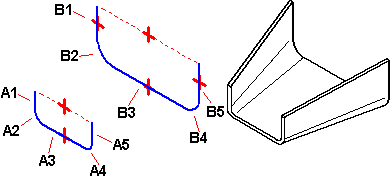
If the two profiles have the same number and type of elements, and each element on the first profile maps to the same element type on the second profile (line to line, or arc to arc), in most cases, you can flatten it.
Ruled surface examples
Any lofted flange that contains a ruled surface cannot be flattened. The following examples describe when a ruled surface is constructed:
-
A face constructed where line A1 has a different angle relative to line B1.
-
A face constructed where arc A2 has a different start angle or included angle relative to arc B2.
-
A face constructed using an arc and a line.
If the lofted flange contains faces that would prevent it from being flattened, a gray arrow is displayed next to the feature on the PathFinder tab. If you hover over the feature in PathFinder, a message describing the problem is displayed in the status bar.
PMI dimensions in the flat pattern
When a flat pattern is created, PMI dimensions are placed as driven dimensions which are for reference only and cannot be changed while in the flat pattern. If you select a PMI dimension in the flat pattern, all fields on the dimension edit control are disabled. If you make changes to the model, the PMI dimensions are updated when the flat pattern updates.
Adding material to the flat pattern
You can use the Tab command to add material to a flat pattern.
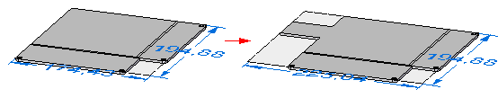
Any tabs created in the flat pattern are placed in the flat pattern node of PathFinder. Any material added to the flat pattern appears only in the flat pattern state. The folded model will not reflect the material addition.
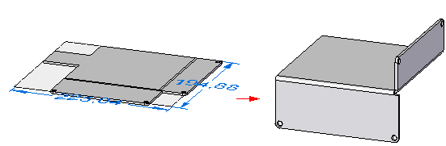
Creating relief patches in flat patterns
Use the Relief Patch command  to remove reliefs in the flat pattern that are not needed in manufacturing.
to remove reliefs in the flat pattern that are not needed in manufacturing.
The command is disabled if no flat pattern exists.
Reliefs automatically created by lofted flanges are the most common examples for use of the command, but you can also patch bend and corner reliefs.
You can select the reliefs that you want to patch and you can edit the relief sketch as needed.
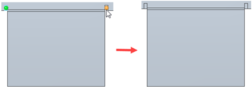

Bend lines are not affected by the command and remain as they were in the drawing before the relief patch was applied. Bend tables also remain unchanged after relief patches are applied.
Saving sheet metal files as AutoCAD documents (.dxf)
When you save a sheet metal part as an AutoCAD document (.dxf), it is saved as 2D. Collinear and concentric arcs are merged into single elements. Bend lines are added as wireframe bodies.
Layers are used to separate the various types of information such as bends, etches, deformation features, and edges. A layer scheme, stored in the sesmf.ini file, defines the information that is stored on the different layers. The layer name is displayed on the Save as Flat DXF Options dialog box and you can edit the value for the layer name.
The default layer scheme stored in the sesmf.ini file is:
|
Element type |
Layer name |
Layer details |
|---|---|---|
|
Default or Normal edges |
OUTER_LOOP and INTERIOR_LOOPS |
All edges from flanges, contour flanges, lofted flanges, tabs, cutouts, and sheet metal cutouts are placed on these layers. The layers can contain visible and hidden edges. |
|
Bend down centerlines |
DOWN_CENTERLINES |
This layer contains the bend centerlines of all linear and conical bends that are in the down direction relative to the selected output face. These lines are generated in the flatten process and do not exist in the model. The line style associated with bend down centerlines can be saved to this layer. |
|
Bend up centerlines |
UP_CENTERLINES |
This layer contains the bend centerlines of all linear and conical bends that are in the up direction relative to the selected output face. These lines are generated in the flatten process and do not exist in the model. The line style associated with bend up centerlines can be saved to this layer. |
|
Deformation features found on down bends |
DOWN_FEATURES |
This layer contains the edges of all deformation features that are in the down direction relative to the selected output face. This layer can contain visible and hidden edges. |
|
Deformation features found on the up bends |
UP_FEATURES |
This layer contains the edges of all deformation features that are in the up direction relative to the selected output face. This layer can contain visible and hidden edges. |
|
Index marks found on the bends of lofted flanges |
INDEX_MARKS |
This layer can contain visible and hidden edges. |
|
Etch features found on the down bends |
DOWN_ETCH |
This layer can contain visible and hidden edges. |
|
Etch features found on the up bends |
UP_ETCH. |
This layer can contain visible and hidden edges |
Etches that cannot be classified are placed on the OTHER layer.
You can use the Export Refined Loops parameter in the sesmf.ini to defines how refined loops are exported to the DXF file when the file is saved as a sheet metal flat.
Eligible parameter values are:
-
0 - Default value
-
1 - Creates two additional layers, REFINED_OUTER_LOOP and REFINED_INTERIOR_LOOP in the DXF file.
The following shows the difference in an outer loop (A) and a refined outer loop (B).
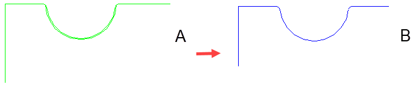
The following shows the difference in an inner loop (A) and a refined interior loop (B)
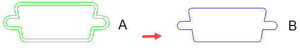
How do I
Construct a flat pattern in the sheet metal part documentApply a patch to relief in a flat pattern
Save and flatten a sheet metal part
Learn more
Creating flat pattern drawingsLook up more details
Flat Pattern commandFlat Pattern command bar
Flat Pattern command bar
Flat Pattern Options dialog box
Relief Patch command
Relief Patch command bar
Save As Flat command
Save as Flat command bar
Save As Flat dialog box
Save As Flat DXF Options dialog box
Layers tab (Save As Flat DXF Options dialog box)
Bend Data tab (Save As Flat DXF Options dialog box)
Font Mapping tab (Save As Flat DXF Options dialog box)